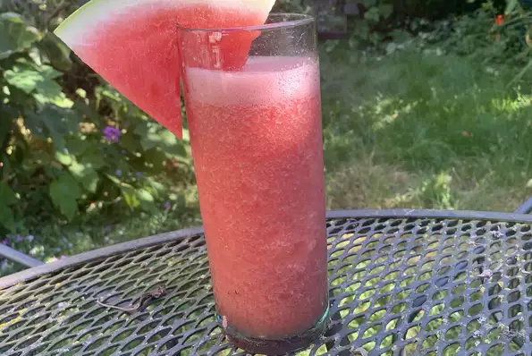

Watermelon Color Slushy

Description
This watermelon slushy is just perfect for hot summer days! Watermelon, ice, and a bit of lime juice are simply blended together in this quick treat.
Ingredients
- 4 cups cubed seedless watermelon
- 10 ice cubes
- ⅓ cup fresh lime juice
- ¼ cup white sugar
- ⅛ teaspoon salt
Steps
- Place watermelon and ice into a blender. Pour in lime juice, sugar, and salt.
- Blend until smooth.